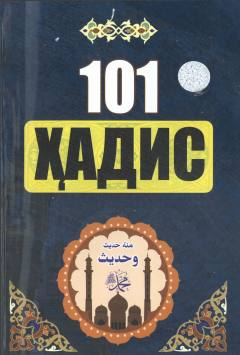

1HAxloq, odob va tijoratga oid qisqa 101 ta nabaviy hadis to'plami.
Ushbu kitobda Payg'ambarimiz Muhammad sollallohu alayhi va sallamning axloq-odob, kasb-hunar, tijorat va do'stona munosabatlarga oid qisqa hamda yod olishga oson bo'lgan 101 ta nabaviy hadisi sharifi to'plangan. Muallif tomonidan tayyorlangan tarjima va izohlar o'quvchilarga hadis ilmining mazmun-mohiyatini tushunishda yaqindan yordam beradi. Risola keng kitobxonlar ommasiga mo'ljallangan bo'lib, diniy-ma'rifiy bilimlarini oshirishni istovchilar uchun qo'llanma bo'la oladi.